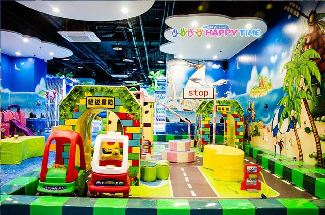
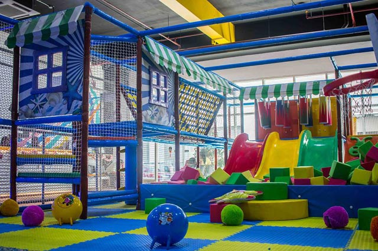
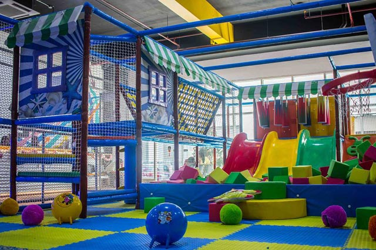

11 Indoor Playground sa Metro Manila Mula P200 Pataas
Swak sa budget na palaruan para sa inyong mga anakby Graciella Musa and Kitty Elicay . December 12, 2022
Bakasyon man ng inyong mga anak o simpleng weekend, palaging may oras para makipag-bonding at sumubok ng mga bagong bagay kasama sila. Kung naghahanap kayo ng kakaibang uri ng bonding maliban sa nakagawian, subukan ang mga indoor playground — sa loob ng ilang oras, siguradong masusulit at mae-enjoy ng inyong mga anak ang paglalaro. Narito ang listahan ng mga indoor playground sa Metro Manila, para sa iba-ibang budget. (Ang mga rate na nabanggit ay para sa 1 bata at 1 matanda, pwera kung iba ang nakasulat).
1. KidsHappyTime Playground Rate: mula P199 bawat oras
Inirerekomenda ito sa mga batang nasa edad 2 hanggang 8 taong gulang dahil ang indoor playground na ito ay mayroong mini-traffic town kung saan maaari silang maglaro na tila nagmamaneho sa kalsada. Mayroon din silang sand pit, trampoline house, dalawang ball pits, carousel, obstacle courses, slide, at iba. Basahin ang iba pang detalye rito at dito.
Ang KidsHappyTime Playground ay nasa 2F, Venice Grand Canal Mall, Upper McKinley Road, Taguig City
2. KidzoonaRate: mula P200 bawat oras para sa Type B branches, at P300 kada 90 minuto para sa Type A branches (malalaking floor areas) sa Metro Manila
Marami nang branches ang Kidzoona sa Metro Manila. Kasama na rito ang pinakabagong branch sa W Mall, Macapagal Boulevard, Pasay City. Kilala ito bilang indoor playground na hindi lamang nakakaaliw kundi educational din. Maaaring ma-enjoy ng mga bata ang kanilang oras sa kiddie obstacles, ball pits, slides, at inflatables. Mayroon ding area kung saan sila maaaring mag-role-play bilang doktor, bumbero, serbidor, panadero, at iba pa. May iba't ibang aktibidad sa bawat branch depende sa floor area nito, kaya asahang magtatagal ang mga bata sa paglalaro dito! Magbasa pa tungkol sa Kidzoona rito.
Tingnan dito ang kumpletong listahan ng mga branches.
3. AwesomevilleRate: mula P200 bawat oras
Kumpleto ang set ng palaruan sa Awesomeville dahil mayroon itong slides, padded ramps, walkways, bridges, obstacles, trampoline, at ball pit. Mayroon ding ilang swings, maliit na play area na may foam blocks, at plastic animal rockers. Kahit swak sa budget ng marami ang presyo nito, hindi ito madalas na napupuno kaya siguradong lalong makapaglalaro nang husto ang inyong mga anak. Gayunpaman, i-check muna ang kanilang Facebook page bago pumunta dahil may mga pagkakataong inaarkila ito para sa mga pribadong pagdiriwang. Magbasa pa ng tungkol sa Awesomeville dito at dito.
Ang Awesomeville ay nasa 4F Gateway Tower, Araneta Center, Cubao, Quezon City
4. Fun CityRate: mula P250 bawat orass
Ang playground na ito ay may malaking floor area na binubuo ng iba't ibang kwarto at lugar para sa iba't ibang gawain, gaya ng fire station, ospital, playroom na may lutu-lutuan at bahay-bahayan ng manika, 'gym' na may obstacles, at bouncy house. Mayroon ding ballpit, video game station, at dance room. Kahit ang matatanda ay maaaring magpalipas ng oras sa videoke room! Pero kaya ito kakaiba sa ibang playground ay dahil mayroon itong excavator na totoong umaandar. Maaari itong sakyan ng mga bata upang maranasan nilang makapaghukay nang lupa gamit ang makinang ito. Ang lahat ng ito ay maaaring maranasan ng inyong anak sa presyong abot-kaya. Magbasa pa ng tungkol sa Fun City dito.
Ang Fun City ay nasa Ground Level, Ali Mall, Araneta Center, Cubao, Quezon City
5. KidzcityRate: mula P280 bawat oras
Ang bagong-renovate na branch sa The Podium ay mayroong ballpit na may kasamang emoji inflatables, swings, maraming slides, obstacle courses, at iba pa! Magbasa pa tungkol sa Kidzcity dito.
Ang Kidzcity ay nasa 4F, The Podium, Mandaluyong City; Basement 1, SM Aura, Bonifacio High Street, Taguig City
 6. Bounce Philippines

6. Bounce Philippines

Rate: mula P249 para sa mga batang edad 1 hanggang 5, P299 para sa adults (isang oras)
Ang pinakabagong trampoline park na ito ay nagtataglay ng dalawang areas: isang playground para sa mga maliliit na bata na binubuo ng foam pit, slides, obstacle course, at iba pa; at isang area para sa mga mas malalaking bata na binubuo ng climbing walls, dodgeball, volleyball zone, basketball hoops, at isa pang foam pit. Sa ganitong paraan, lahat ay magkakaroon ng pagkakataong mag-enjoy. Magbasa pa ng tungkol sa Bounce Philippines dito at dito.
Ang Bounce ay nasa Southmall Access Road, Almanza Uno, Las Pinas City
7. Jump YardRate: mula P250 kada jumper sa bawat oras
Ang trampoline park na ito ay binubuo ng higit 2,000 square meters ng jumping space. Tamang-tama ito para sa inyong mga anak na maraming enerhiya sa paglalaro. Maliban sa foam pit at trampoline squares, mayroon din silang dodgeball court, Slam Dunk Basketball zone, at apat na Olympic trampolines para sa mga mas nakatatandang jumpers. Maaari ring sumubok ang maliliit na bata ng wall climbing, pagbalanse sa beams, pagtawid gamit ang monkey bars, at pag-swing sa foam bags. Magbasa pa ng tungkol sa Jump Yard dito at dito.
Ang Jump Yard ay nasa Frontera Verde Complex, Ortigas Ave. cor. C5, Pasig City
8. Trampoline ParkRate: mula P320 bawat tao
Ang parkeng ito ay may tinatayang labindalawang trampolines na sumasaklaw ang lawak sa magkabilang dingding; mayroon ding foam pit, at ilang basketball hoops. Isang paalala: kahit pinapayagan ditto ang mga batang 2 taong gulang pataas, walang hiwalay na area para sa kanila kaya hinihikayat ang pagkakaroon ng kasamang guardian na magbabantay sa kanila sa lahat ng oras. Magbasa pa tungkol sa Trampoline Park dito.
Ang Trampoline Park ay nasa The Portal, Mayflower St., Greenfield District, Mandaluyong City
9. DreamPlayMakikita rito lahat ng paborito mong tauhan sa iba't ibang pelikula ng Dreamworks tulad ng How to Train Your Dragon, Kung Fu Panda, at Shrek. Nandito rin ang sari-saring mga atraksyon, gaya ng pag-akyat sa Wall of Destiny, pagluluto kasama si Gingy, pagtawid sa Thread of Enlightenment (isang malaking obstacle course), at paglikha ng sariling dragon (at pagpapalipad sa kanila!). Idagdag mo pa riyan ang multilevel play area, sinehan, at storytelling area. Maaari ring matutong gumawa ang inyong mga anak ng kanilang sariling animated film dito! Basahin ang iba pang detalye rito.
Ang DreamPlay ay nasa City of Dreams, Asean Avenue cor Roxas Boulevard, Entertainment City, Paranaque City
10. KidzaniaRate: mula P900 bawat bata
Ang malawak at interactive playground na ito ay mainam para sa mga batang nasa edad 4 hanggang 14 taong gulang na nais mag-role play at maranasan kung paano maging isang propesyonal. Mula sa pagiging pulis, recording artist, o magsasaka, nasa mahigit 70 ang role-play activities ang maaaring pagpilian ng mga bata. Ang bawat role-play activity ay tumatagal mula 15 hanggang 30 minuto. Halimbawa, maaari silang maging bombero at magkaroon ng pagkakataong makasakay sa fire truck upang maranasang pumatay ng apoy. Pati ang pagiging masinop sa pera ay itinuturo rito! Para sa bawat gawaing kanilang matatapos, makatatanggap ang mga bata ng 'sahod' na maaari nilang itabi at patubuin sa bangko. Magbasa pa ng tungkol sa Kidzania dito at dito.
Ang Kidzania ay nasa Park Triangle, 11th Ave, Bonifacio High Street, Taguig City
11. Play
Rate: mula P1,050 sa unang limang oras
Isa rin ang Play sa mga pinakamalaking indoor playground kung saan makakapag-aliw at matututo rin ang mga bata. Ang Play sa Okada Manila ay mayroong 8 play areas na partikular na dinisenyo para sa kabataang nasa edad 1 hanggang 16 taong gulang. Binibigyan nito ng pagkakataon ang mga bata na mag-role-play ng kanilang ninanais na propesyon, maglibot sa maze, maglaro ng interactive videos, sumubok ng sports, at pati ang makapagtanghal sa entablado. May kapasidad itong tumanggap ng 300 katao. Magbasa pa ng tungkol sa Kidzania dito at dito.
Ang Play ay nasa Upper Ground Level, Coral Wing, Okada Manila, Entertainment City, Paranaque City
Related Articles
- Travel To Singapore: What Filipino Tourists Need To Know
- Maganda Na, Tipid Pa! Family's Sustainable Home Helps Them Lower Costs On Utility Bills
- Job Hunting? There's A Big Demand For Virtual Assistant, Content Creator, BPO Positions
- Summer Family Getaway? 5 Celebrity-Owned Rest House, Resorts You Can Book
- Is Vaccination Required Before Kids Can Attend Face To Face Classes? Here's What DepEd Says
Recommended articles just for you:
- 7 Sintomas Na Posibleng Preterm Labor Na Pala Ang Nararanasan Mo
- Tumataas Ang Tyansang Manganak Nang Di Oras Dahil Sa Ganitong Preterm Labor Risk Factors
- 'Bakit Walang Lukso Ng Dugo?' It's Called Maternal Ambivalence And It's Normal, Expert Says
- 'Catch Your Baby And Don’t Drop It!' Coron Doctor Involves Fathers In Childbirth
- This Cebu Bride Gave Birth On Her Wedding Day! 'Dumoble 'Yung Blessings'
- Bumuka Ang Tahi? Mga Hakbang Sa Pangangalaga Ng Sugat Mula Sa CS
.png)
.png)
.png)
.png)
.png)